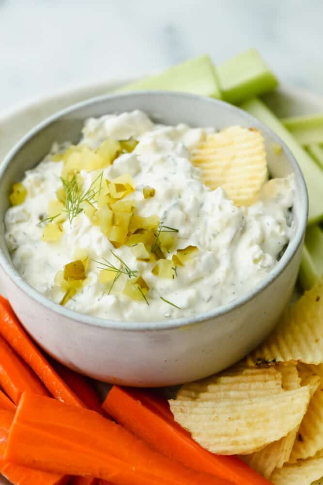

French Onion Pickle Dip

Description
Dips are good. Dips are life.
Let's prepare a dip that goes with almost anything. Also - bonus points! It's french, so you can feel sophisticated when telling the name of the dip
Ingredients
- 1 ½ tablespoons olive oil
- 1 sweet onion, chopped
- 1 ⅓ cups Greek yogurt
- ½ cup Japanese mayonnaise (such as Kewpie®)
- ⅔ cup finely chopped cornichons
- 1 tablespoon minced fresh dill
- 1 clove garlic, minced
- ridge-cut potato chips for serving (optional)
Steps
- Heat the oil in a large skillet over medium-low heat until warm. Add onions and sauté until reduced and caramelized, 15 to 18 minutes. Remove from heat and set aside to cool.
- Stir together Greek yogurt, kewpie mayo, cornichon pickles, dill, garlic, salt, and pepper in a bowl until well combined. Once cooled, stir in caramelized onions. Serve immediately with potato chips.